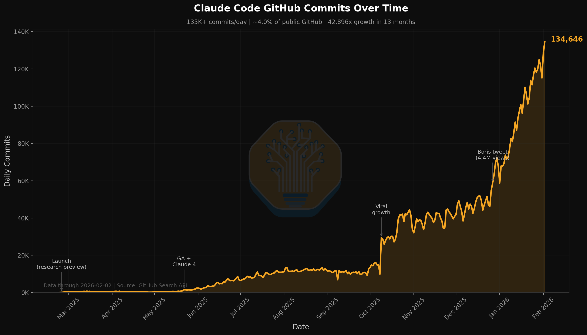

情報労働の終焉と、半導体エコシステムを脅かす次なるボトルネック
Latent Space podcastの最新エピソードに、SemiAnalysisのDoug O’Laughlinが登場した。彼は単なる半導体アナリストの枠に収まらず、最先端のAIツールを日常のワークフローに極限まで組み込む「Bleeding-edge adopter」として知られている。
本エピソードでは、彼がどのようにClaude Codeを活用して「インフォメーションワーク」を破壊的にスケールさせているかというソフトウェア的なパラダイムシフトと、それに呼応して爆発するコンピュート需要が引き起こす物理的なハードウェアの限界、すなわち「Memory Mania」の双方が語られた。
AIによるリサーチ業務の自動化を語る与太話は世に溢れているが、情報の最前線で戦うプロフェッショナルがどのようにAIを「Junior Analyst」として飼い慣らし、同時にインフラストラクチャのサプライチェーン制約をどう分析しているのか。本稿ではその深淵に焦点を当てる。
Terminalに棲まうJunior AnalystとIDEの終焉
O’Laughlinの分析の起点となるのは、Claude Codeの驚異的な生産性である。彼の推計によれば、現在GitHub上の全コードのおよそ4〜5%が既にClaude Codeによって書かれているという。これは単なるコーディング支援の域を超え、情報処理の抜本的なスケーリングが起きていることを意味する。

彼は現在、Claude Codeを単なるコードジェネレーターではなく、極めて優秀な「Junior Analyst」としてターミナル内に常駐させている。金融アナリストの仕事の大部分は、散在する情報をかき集め、データをフォーマットし、ダッシュボードを構築するという、いわゆる「pain-in-the-ass」な作業である。O’Laughlinはこれらのタスクを丸ごとAgentに丸投げし、自身は高次元の意思決定というメタレベル（meta-level）に留まることに成功している。
ここで彼が提示する最も挑発的な予言が、「伝統的なIDEの死」である。 アナリストにとってのIDEとは、長年Excelであり、Bloombergターミナルであった。しかし、これらのレガシーツールはもはや情報処理のボトルネックとなりつつある。AI agentがPythonスクリプトを実行し、ウェブから動的にデータをスクレイピングし、数分でMatplotlibによる出版品質のチャートを生成できる世界において、人間が手作業でセルを埋め、Bloombergの複雑なショートカットキーを暗記する意味はどこにあるのだろうか。
このパラダイムシフトにおいて最も多くのものを失うのは、皮肉なことにホリゾンタルなソフトウェアを握るMicrosoftであるとO’Laughlinは指摘する。AIインフラとしてのAzureの成長と、ホリゾンタルSaaS（ExcelやPowerPoint）を破壊しにくる「城門の蛮族」としてのOpenAIのエージェントたち。Microsoftは、自らのコアビジネスを守るための城壁工事に再投資するか、あるいは土管化するAzureビジネスに甘んじるかという、古典的かつ残酷なイノベーターのジレンマに直面しているのだ。
Context RationingとAgent Swarmの現在地
とはいえ、Agentにタスクを投げ続ければ魔法のように結果が出るわけではない。Claude Codeを極限まで使い倒す中でO’Laughlinがたどり着いた実践的なアプローチが、「Context Rationing（コンテキストの配給・節約）」である。
現在のLLMは1 Million tokensという広大なコンテキストウィンドウを誇るが、それらは決して無限ではなく、また完璧でもない。巨大なプロンプトを単一のセッションに詰め込みすぎると、AIは過去の指示を忘れ、出力が次第に破綻していく「Context rot（コンテキストの腐敗）」を引き起こす。
この問題に対処するため、彼は大規模で複雑なリサーチプロジェクトを小さなタスクに分割し、それぞれ独立した「Agent Swarms（エージェントの群れ）」に処理させる手法をとっている。Anthropicの実験的なAgent機能にはまだRL（強化学習）が十分に効いていない部分もあるが、Kimiなどの新興モデルのSwarmベンチマークが示すように、複数のサブエージェントにクリーンなコンテキストを与え、並列処理させるアーキテクチャこそが現在のベストプラクティスである。コンテキストを意識的に分割・管理することで、単一の巨大なプロンプトにすべてを託すよりも、はるかに高精度な出力が得られるのだ。
Moore’s Lawの死とHBMが引き起こすMemory Mania
ソフトウェア側での情報労働の爆発は、必然的にハードウェア側の物理的な制約という壁に激突する。エピソードの後半でO’Laughlinが強調するのは、彼自身のコアテーゼである「Moore’s Law is Dead（ムーアの法則は死んだ）」という現実と、そこから派生する現在の「Memory Mania」である。
Moore’s Lawが停滞し、伝統的なスケーリングが物理的限界を迎えた今、半導体の古いプレイブックは完全に破棄された。もはや「単にチップを小さくする」だけでは勝てない。高度なパッケージング、並列コンピューティング、そしてネットワーク全体を「一つの巨大なコンピュータ」として機能させるエコシステムを構築できるNVIDIAのような企業が、世界で最も価値のある企業へと変貌した。
そして2025年現在、AIインフラの首を最も強烈に絞めている究極のボトルネックが、High Bandwidth Memory (HBM) である。
HBMの製造は極めて複雑であり、標準的なDRAMと比較して1ギガバイトあたり約3倍から4倍のウェハー容量を消費する（Multiplier Effect）。データセンターからのとめどない需要に応えるため、Samsung、SK Hynix、Micronといった主要メモリメーカーは、利益率の低いコンシューマー向けDRAMやNANDの生産ラインをHBMへと強引に振り向けている。
このリソースの再配分は、スマートフォンやPC向けの標準メモリの深刻な供給不足と価格高騰を引き起こす「Memory Supercycle」の引き金となった。過去の市場低迷期にCapEx（資本的支出）を抑制し、クリーンルームの建設を怠ったツケが、数年単位のリードタイムを伴う「Surprise Squeeze（予期せぬ供給逼迫）」として業界全体を襲っているのである。
このメモリの枯渇を凌ぐための「絆創膏（Band-Aid）」として、一度は死んだと思われていたCompute Express Link (CXL) 技術が劇的な復活を遂げている。古いDDR4などの未使用DRAMをプールし、コンピュート需要に対して動的に割り当てるCXLは、高騰するHBMの隙間を埋める必須のインフラとして、現在急速にデータセンターへの導入が進められている。
狂乱のCapExと鉄道建設ラッシュのアナロジー
このような未曾有のハードウェア投資を、O’Laughlinは19世紀の「鉄道建設ラッシュ（Railroad CapEx）」に例えている。当時、鉄道インフラへの投資は長期間にわたりGNPの数パーセントを占め続け、結果として現代の金融システム（銀行業）を確固たるものにした。
現在のAIインフラ投資も、かつてのインターネット・バブルを遥かに凌駕する規模で進行している。Stargateプロジェクトのような超巨大インフラ構想は、米国のGDPの2%にも達する規模になり得る。しかし、資本主義の胃袋にも限界がある。Oracleが市場の流動性を無視して過剰な債務（Debt）を発行し、TMTセクター全体のクレジットスプレッドを歪めたエピソードは、この狂乱のCapExがマクロ経済全体にいかに強い歪みをもたらしているかを示す好例である。
同時に、NVIDIAのJensen Huangが台湾に飛んでTSMCやSK Hynixのトップと酒を酌み交わし、泥臭くサプライチェーンの確保に奔走している一方で、GoogleのTPUチームがコンピュートの外部提供（Anthropic等への開放）を通じてシェア拡大を狙う構図は、最先端の技術闘争が極めて人間臭いロジスティクスの奪い合いの上に成り立っていることを浮き彫りにしている。
人間的エッジと最後の5%
AIの進化とインフラの巨大化を語り尽くしたO’Laughlinだが、彼は同時に極めて現実的な視座も持ち合わせている。「このガラクタ（AI）は、常にミスをする（this crap makes mistakes all the time）」と彼は笑う。
AIがどれほど疲れを知らないJunior Analystとして機能しようとも、あるいは100個のAgentを並列に走らせることができようとも、出力されたスロップ（slop）を精査し、文脈に沿った「最後の5%の判断（last 5% of judgment）」を下すのは、深い専門知識とパターン認識能力を培ってきた人間（エキスパート）の役割である。情報のスピードがかつてないほど加速する中、情報をただ消費するだけの傍観者は取り残され、自らの手でツールを組み立て、AIとともに「Just do things」を実践できるBleeding-edge adopterだけが、次なる時代のアルファを独占する。
Continental Divide Trailという2,800マイルの過酷な単独ハイキングを踏破した経験を持つ彼は、極限の環境下での「Self-mastery」こそが、人間にとって最も重要なツールであると語った。果てしなく広がるAIのコンテキストウィンドウと、枯渇していくシリコンのメモリ。その間で最も試されているのは、我々自身の認知の解像度と、世界を抽象化し続ける意志そのものなのかもしれない。